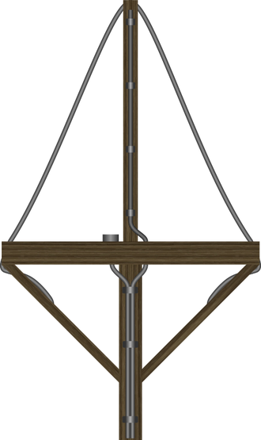
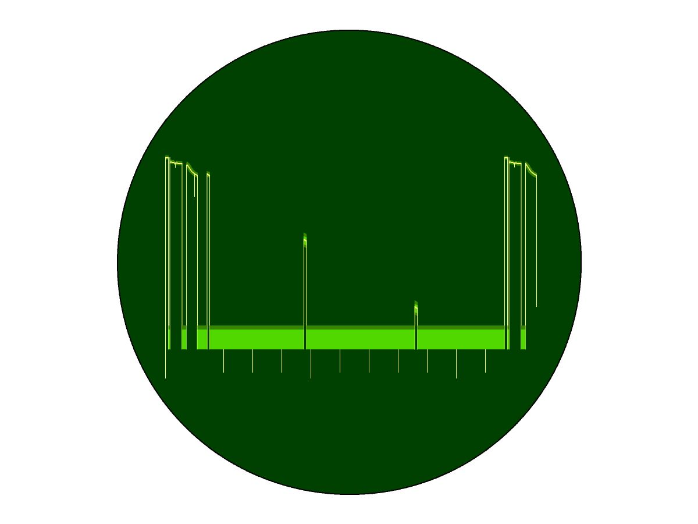
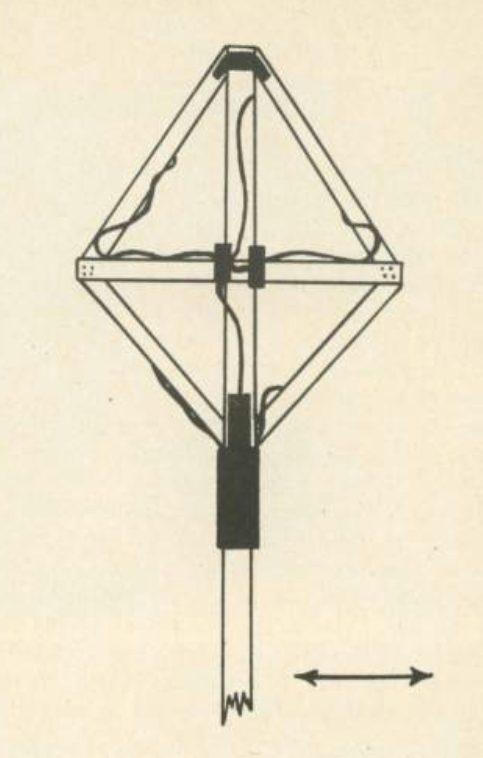
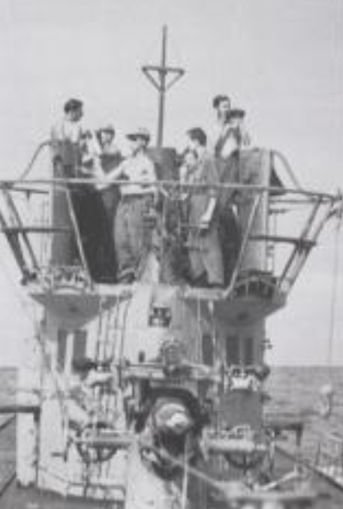
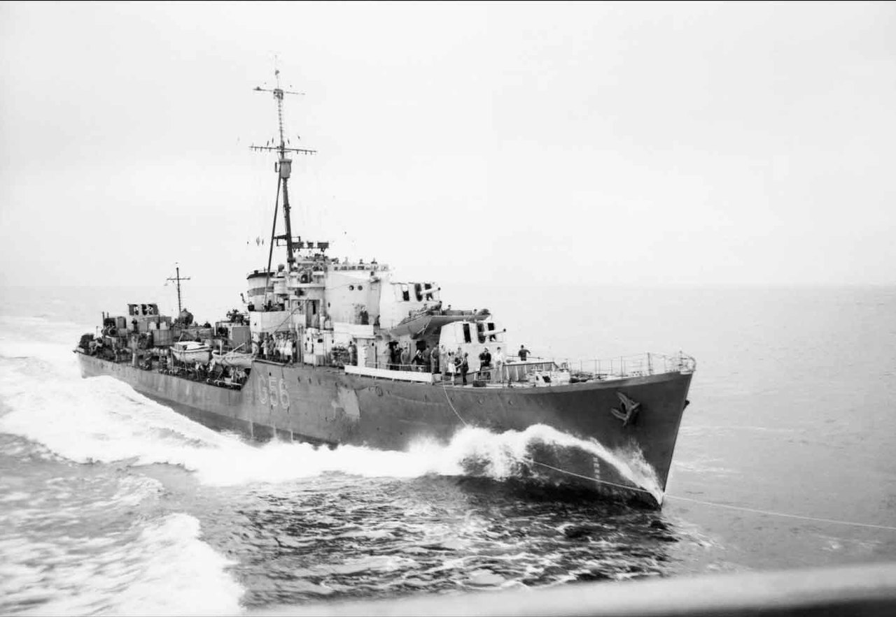
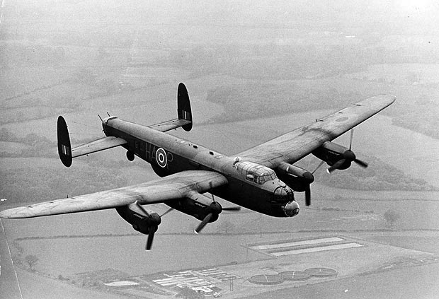

레이더 개발 이야기 (27) - 기술 싸움과 머리 싸움
게시: 2023-03-30T06:30:48+09:00
<독일놈들도 머리가 있다> 공대함 레이더 ASV Mk II와 Leigh 탐조등 조합이 이제 막 위력을 발휘하기 시작한지 2~3달 된 1942년 8월 경부터 로열 에어포스 해양 초계기들 중 일부가 이상한 경험을 하기 시작. 레이더 스코프에 유보트를 포착하고 신이 나서 달려가보면 귀신처럼 유보트가 사라졌다는 것. 처음에는 레이더 오작동인가 싶었으나 곧 독일놈들이 레이더 전파를 수신하여 초계기가 다가온다는 것을 경보하는 장치를 만들었다는 것을 깨달음. 9월 경에는 모든 초계기들이 그런 현상을 경험하기 시작. 나중에야 알았지만 이는 FuMB 1 (Funkmessbeobachtungsgerät, 전파 측정 장치)라는 공식 명칭이지만 실제로는 그 장치를 만든 파리 소재 프랑스 회사의 이름을 따 그냥 Metox라고 불리는 간단한 장치 덕분. 이는 1.5m 길이의 십자 형태로 구성된 안테나를 손으로 돌려가며 당시 영국 ASV Mk II의 주파수인 200MHz 전파를 탐지하여, 만약 전파가 수신되면 감시원의 헤드폰에 삐 소리가 나게 해주는 매우 간단한 장치. 요즘 전투기들은 다 갖춘 radar warning receiver (RWR)의 원조인 셈.

(Metox 안테나. 독특한 모양새와 ASV 및 그에 대응한 이 메톡스가 많이 사용된 바다의 이름 덕분에, 이 장치의 별명은 'Biscay 만의 십자가'로 불렸다고.)
이건 매우 간단한 장치였지만 운용의 묘는 필요. ASV의 레이더 전파는 초계기가 유보트를 탐지 못하는 먼 거리에서도 감지가 되었으므로 그 주파수의 전파가 감지되었다고 해서 당장 경보를 울린다면 유보트는 불필요한 가짜 경보에 쉴 틈이 없었을 것. 도플러 효과를 이용한 감지 장치가 없던 메톡스에서는 어떻게 저 전파가 엉뚱한 방향으로 날아가는 초계기에서 날아온 것인지 자신을 탐지하고 자기 쪽으로 날아오는 초계기에서 온 것인지 구분했을까? 당시 로열 에어포스 초계기들은 먼 거리까지 감시할 때는 레이더 거리 측정 화면인 A-scope의 척도를 58km로 두었다가, 뭔가 해상의 물체를 파악하면 목표물을 더 자세히 보기 위해서 거리 측정 화면의 척도를 14km로 다시 설정했음. 그렇게 하면 레이더 펄스파의 빈도수가 2배로 늘어남. 즉, 유보트의 메톡스 감시원은 삐 소리가 점점 커지는지 여부에 귀를 기울이다가 삐 소리가 2배로 늘어나면 '영국놈들이 날아옵니다!'라고 경보를 울렸던 것.

(그림이 당시 레이더의 화면인 A-scope. 거리 측정 기능만 있었는데, ASV Mk II에서는 저 가로축의 길이를 장거리 모드에서는 58km로 두었다가, 목표물 근처로 접근하면 더 자세한 거리 측정을 위해 저 가로축의 길이를 14km로 재설정.)
이 간단한 장치의 효과는 극적. 대략 통계를 내보니 발견된 유보트의 50%가 초계기가 현장에 도착하기 전에 이미 잠항. 그리고 연합군의 젖줄인 대서양 수송로에서의 수송선 격침량이 ASV 덕분에 막 줄어들고 있었는데 메톡스가 도입된 이후로 수송선 격침량이 눈에 띄게 증가하기 시작. 이를 알게 된 로열 에어포스에서는 머리를 감싸고 고민. 이러면 ASV를 끄고 초계 비행을 해야 하는 거 아닌가? 그런데 그런 결정은 충동적이어서는 안 되고 데이터에 기반을 두어야 함. 그런데 아직 통계 데이터가 없음. 그래서 일단은 그냥 ASV를 켜고 계속 초계 비행. 통계 데이터는 몇달 뒤인 1943년 초에야 나왔는데 그 결과는...

(메톡스 안테나의 다른 그림. 전파 감지는 저 십자가에 감긴 전선에서 하는 것이고, 저 십자가 및 그를 둘러싼 마름모꼴 틀은 그냥 지지대일 뿐으로서, 당시 일부 유보트에는 그냥 낡은 나무 상자에서 뜯어낸 판재로 저 메톡스 안테나를 만들었다고. 저 마름모꼴 테두리 틀은 그냥 구조물 강화용인데, 간혹 저 마름모꼴 테두리는 떨어져 나간 상태에서도 운용했다고 함. 오른쪽 아래의 화살표는 사람의 머리 크기를 나타내는 것으로서 크기 비교용.)

(메톡스 안테나를 올린 유보트와 그 승조원들의 모습)
ASV 레이더가 도입되기 이전에는 초계기가 유보트를 발견할 때까지 평균 135시간을 비행해야 했음. 그런데 그 시간이 ASV 도입으로 95시간으로 줄었음. 40%가 넘는 향상. 그런데 10월 이후 메톡스가 완전히 자리를 잡은 이후에는 그 시간이 다시 135시간으로 늘었음. 즉 메톡스는 ASV 레이더를 완전 무력화시켰다고 볼 수 있었음. 그런데 정작 ASV를 끄고 초계를 해보니, (이젠 유보트들도 초계기에 대해 주의했으므로) 그 시간은 245시간으로 껑충 뜀. 거의 45%가 넘는 악화. 결국 메톡스에도 불구하고 ASV는 여전히 도움이 된다는 것이었고 결국 로열 에어포스는 ASV를 계속 사용하기로 함. 그런데 뭔가 대책은 있어야 할 것 아닌가? 대책은 의외의 곳에서 나옴.
<역시 독일놈들 멍청하네!> 영국이 많은 돈과 시간을 들여 만든 ASV 레이더를 독일이 나무판자로 만든 Metox 안테나로 반쯤 무력화 시킨 1942년 겨울, 뜻밖의 일이 벌어짐. 앨런 튜링이 주도한 독일 암호 체계 Enigma의 해독은 WW2 초기부터 가능했였지만 영화 'The Imitation Game'에서 간단히 묘사된 것과는 달리 독일 유보트와의 교신에 사용되던 이니그마는 암호 체계가 중간에 바뀌기도 하고 계속 개선이 이루어졌으므로 1942년 즈음해서는 영국은 유보트의 교신을 해독 못하고 있었음. 그러다 몇몇 유보트가 나포되면서 코드 북이 영국 손에 들어왔고, 결국 1942년 12월부터는 다시 유보트와의 교신을 영국이 해독할 수 있게 됨.
(베네딕트 컴버배치 주연의 영화 '이미테이션 게임'. 실제 Enigma 해독 활동은 전쟁 이전부터 활발히 진행되었고 영화처럼 앨런 튜링 혼자서 뚝딱 해치운 것도 아니며, 폴란드인들의 사전 연구에 기반하여 이루어졌다고. 그리고 독일도 계속 암호 체계를 개선하고 바꿨으므로 언제나 계속 해독이 되었던 것도 아님.)

(1942년 12월부터 다시 이니그마의 해독이 가능해진 것은 1942년 10월, 이집트 연안에서 유보트 U-559가 영국 공군 초계기에게 발각된 뒤 5척의 영국 해군 구축함에게 16시간 동안 집요한 추격과 공격을 받은 끝에 만신창이가 된 채로 부상했기 때문. 이떄 유보트 승무원들은 허겁지겁 퇴함하느라 이니그마 코드 북을 파기하지도 않았고 유보트를 자침시키기 위해 열어놓은 밸브를 완전히 열지도 않아서, 3명의 영국 해군이 맨 몸으로 헤엄쳐가서 침몰하는 유보트로부터 코드 북을 건져 왔음. 사진은 그때 부상한 U-559에 20mm 오리콘 기관포 세례를 퍼부어 독일 승무원들이 기겁을 하고 퇴함하도록 만든 영국 구축함 HMS Petard. 2200톤, 36노트.)
덕분에 유보트가 언제 어디를 통과하는지 알 수 있게 된 로열 에어포스 초계기들의 사냥은 더욱 정밀해져서, 초계기들에 장착된 ASV 레이더의 전파를 Metox 안테나로 잡아냄에도 불구하고 유보트들의 격침률이 다시 올라가게 됨. 그러나 당시 독일 해군은 이니그마 암호체계에 대한 믿음이 철통같아서, 그것이 뚫렸을 리는 없고 영국놈들이 ASV 레이더에 뭔가 기술적 돌파구를 마련한 것이 틀림없다고 생각하게 되었음. 바로 그때, '설마 이게 통하겠어'라면서도 로열 에어포스가 깨알 같이 깔아놓은 작전이 홈런을 날림.

(가령 Avro Lancaster 폭격기가 최초로 격추된 것은 1942년 3월, 프랑스 브레타뉴 지방의 목표물을 공격하다 독일군 대공포에 맞아 떨어진 것.)
로열 에어포스는 이미 독일 등지를 폭격하고 있었고, 당연히 일부 폭격기는 격추되어 승무원 중 일부는 독일군의 포로가 됨. 그때를 대비하여, 1942년 겨울 이후 폭격기 조종사 및 승무원들에게는 '영국 공군이 Metox에 대해 잘 알고 있으며 Metox 자체에서 발생하는 미약한 전파를 감지하는 장치를 개발하여 초계기에 탑재했다'라고 가르쳐 놓았음. 독일군은 포로들을 취조해보고, 또 1942년 12월 이후부터 갑자기 유보트 격침이 잦아진 것을 보고 저 포로들의 말이 사실이라고 확신을 하게 됨. 결국 독일 해군은 모든 유보트에게 메톡스 사용을 금지 시킴. 그러나 독일 유보트와 로열 에어포스의 레이더의 싸움은 여기서 끝나지 않음. 독일은 이제 정말 작은 호흡관만 물 밖으로 내놓을 수 있는 schnorchel을 내놓았고, 로열 에어포스는 비장의 무기 cavity magnetron을 이용한 H2S 레이더를 내놓음. 그 이야기는 다음에.